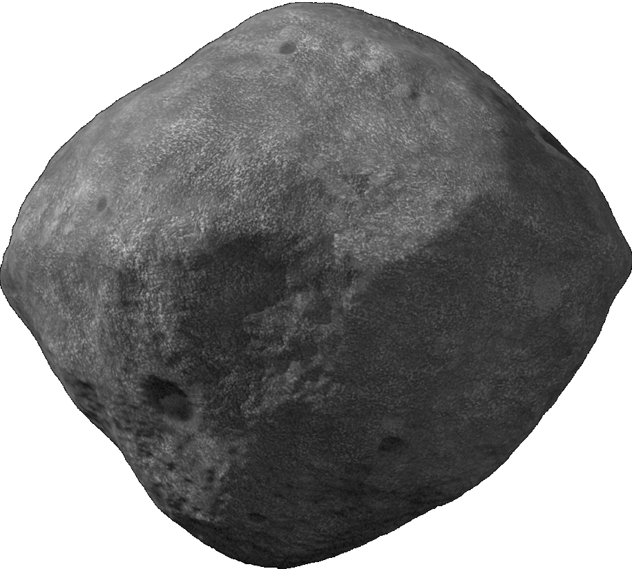
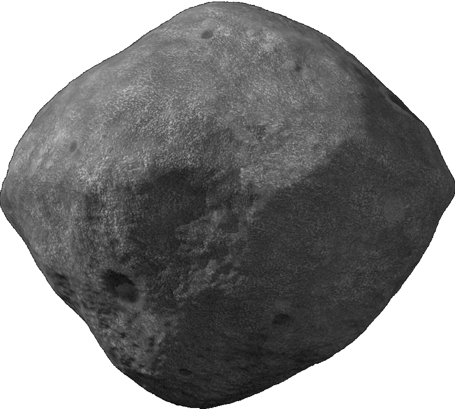
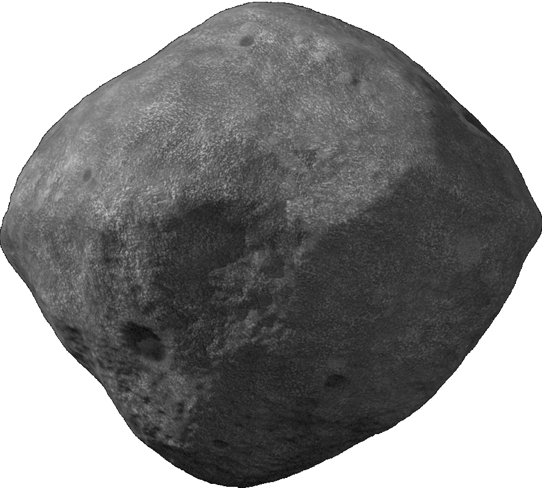
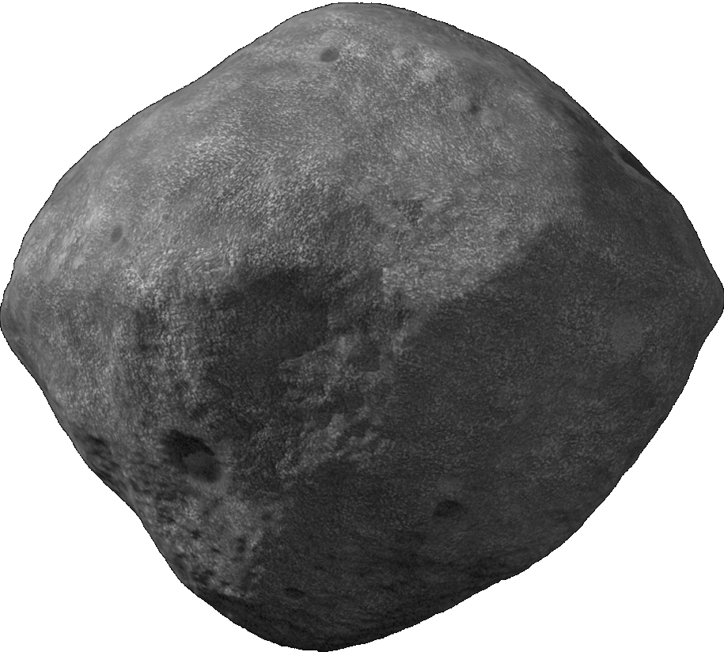

 
 Los asteroides son más pequeños que los planetas enanos, y se cencentran principalmente entre las órbitas de Marte y Júpiter, encontrándose entre ellos el planeta enano Ceres. Es probable que Júpiter impidiera que se formara en esa zona un planeta, por lo que es una región que está plaada de fragmentos de roca de diversos tamaño. Para ver los asteroides es preferible utilizar un telescopio
Los cometas son bolas de hielo de hasta 40 Km de diámetro que se encuentran la mayor parte del tiempo muy alejadas de las zonas interiores del Sistema Solar. En ocaciones algunas de estas bolas de nieve se acercan al Sol, que con su calor evapora el hielo y crea una hermosa cola que puede llegar a medir millones de kilómetros de longitud. Entre el hielo hay siempre mezclada una cierta cantidad de polv. Este polvo, que sale despedido al espacio cuando el cometa se evapora por la acción del Sol. también contribuye a la formación de la cola del cometa
Algunos cometas se hacen tan grandes y llegan a reflejar tanta luz del Sol que se hacen visibles a simple vista. En 2008 uno de estos cometas, denominado Holmes, sufrió unja enorme explosión despúes de más de 100 años de calma. Llegó a hacerse tan grande como el Sol, aunque por supuesto no tan brillante. Cuando un cometa se acerca al Sol, se forma una gran cola com todo el hielo que se evapora y el polvo que desprende